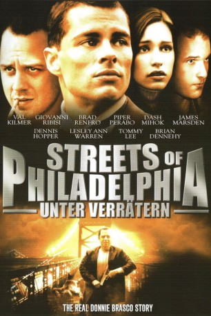

#10833 Streets of Philadelphia - Unter Verrätern
Alternativ: 10th & Wolf (Englischer Titel)
 
 IMDB-Wertung: 6.4 / 10
IMDB-Wertung: 6.4 / 10  Metascore: 36
Metascore: 36 
Tommy Soldat im Irakkrieg, hatte seinem Vorgesetzten den Jeep geklaut und ist damit dreißig Kilometer in die falsche Richtung gefahren. Die US-Behörden haben ihn nun in der Hand. Damit er nicht in den Knast muss lässt er sich auf einen Deal ein. Er soll seinen Cousin Joey der Pate eines kleinen Mafia-Bertiebes ist, bespitzeln. Der zwielichtige Agent Horvath will so an die dicken Fische herankommen. Doch Joey plant nicht nur ins Drogengeschäft einzusteigen, er will die ganze Stadt übernehmen. Es kommt zu blutigen Bandenkriegen. Die Situation eskaliert, als ein Geheimnis des kürzlich verstorbenen Paten Matello ans Licht kommt.
Jahr: 2006
Dauer: 109 Minuten
FSK: 16
Land: USA Studio: THINKFilmTonspuren: DTS - ,
Untertitel:
Auflösung: 1080p (1920x816) Größe: 5376 MB
Genre: Thriller, Drama, Krimi
Regisseur: Bobby Moresco
Drehbuch: Bobby Moresco, Allan Steele
Soundtrack: Aaron Zigman
Darsteller:
 James Marsden als Tommy
James Marsden als Tommy Giovanni Ribisi als Joey
Giovanni Ribisi als Joey Brad Renfro als Vincent
Brad Renfro als Vincent Piper Perabo als Brandy
Piper Perabo als Brandy Dennis Hopper als Matty Matello
Dennis Hopper als Matty Matello Brian Dennehy als Agent Horvath
Brian Dennehy als Agent Horvath Lesley Ann Warren als Tina
Lesley Ann Warren als Tina Leo Rossi als Agent Thornton
Leo Rossi als Agent Thornton Dash Mihok als Junior
Dash Mihok als Junior- Tommy Lee als Jimmy Tattoo
- Francesco Salvi als Luciano Reggio
 Val Kilmer als Murtha
Val Kilmer als Murtha John Capodice als Sipio
John Capodice als Sipio- Billy Gallo als Provenzano
- Ken Garito als Willy
 Patrick Jordan als Ricky's Crew
Patrick Jordan als Ricky's Crew Tony Luke Jr. als Rocco
Tony Luke Jr. als Rocco- Rose Rossi als Blonde at Diner
- Igor De Laurentiis als Ricky's Crew
- Joe Pistone als Ricky's Crew
- Barry Sigismondi als Benedetto
- Sonny Marinelli als Jimmy
- Corina Marie als Doreen
- Amanda Moresco als Missy
- J.R. Cacia als Tony - Forklift Operator
- Veronica De Laurentiis als Angelina - Reggio's Wife
- Larry Demme als Man in Tuxedo
 Patrick Brennan als Night Manager at Pharmacy
Patrick Brennan als Night Manager at Pharmacy- James Heaphy als Detective
 Tony Devon als Sicilian
Tony Devon als Sicilian- Joey Boombotze als Joey
- Jared Farid Ward als Trent
 Aaron Bernard als Slick - Joey's Crew (uncredited)
Aaron Bernard als Slick - Joey's Crew (uncredited)- Margot Boecker als Waitress (uncredited)
- Atticus Cain als S.W.A.T. Officer (uncredited)
- Frank Cordek als Wannabe (uncredited)
- Jesse Gullion als Milk Shake Guy (uncredited)
 John W. Iwanonkiw als FBI at Checkout Line (uncredited)
John W. Iwanonkiw als FBI at Checkout Line (uncredited)- Meritt Latimore als Sleeping Girl on Bus (uncredited)
- Robert Liscio als Bus Boy (uncredited)
- David Morse als Gentlemen's Club Patron (uncredited)
- Sonny Vellozzi als Gentlemen's Club Patron (uncredited)
- James Grimaldi als Ricky Jerk-Off
- Jeffrey Tott als Angelo 11-Year-Old at Funeral
- Michilline Arvie als Emergency Room Doctor
- Jude Moresco als Joey's Gang Member
- Brian Thomas als Drunken Club Patron
- Doreen Dunlap als Hancock
- Dan Trevelino als Florio
- Jason Collins als Pagliacci
Datei: X:\2006(N-Z)\Streets of Philadelphia - Unter Verrätern (2006, FSK16, 1920x816).mkv seit 09.03.2019
Festplatte: HD 2005(G-Z)-2006(A-Z)
 Es gibt insgesamt 62 Filme in der Gruppe '2006(N-Z)'
Es gibt insgesamt 62 Filme in der Gruppe '2006(N-Z)'